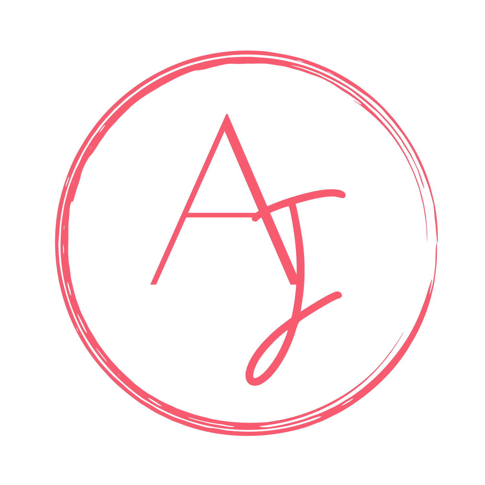
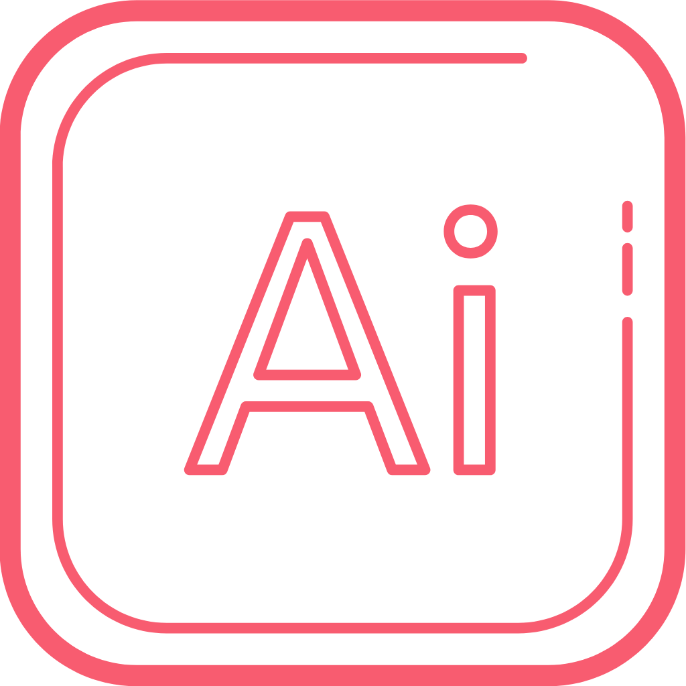
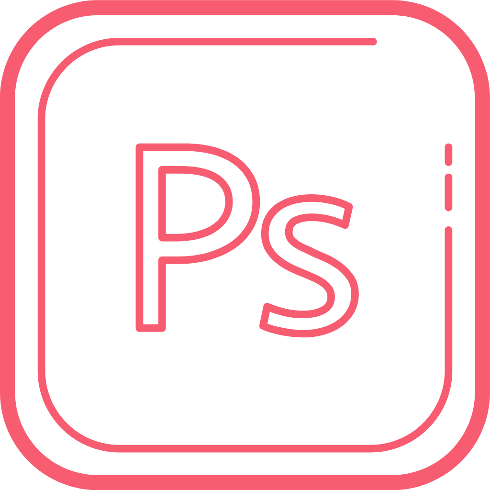
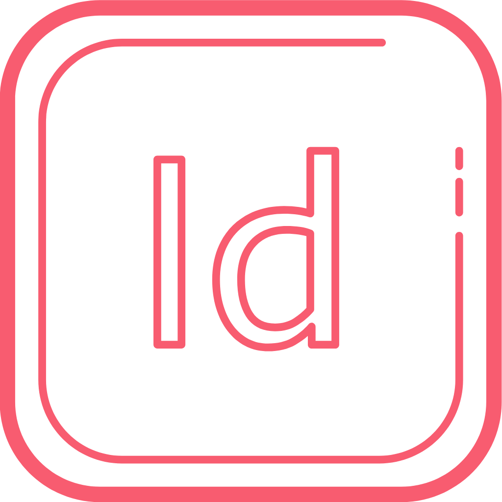
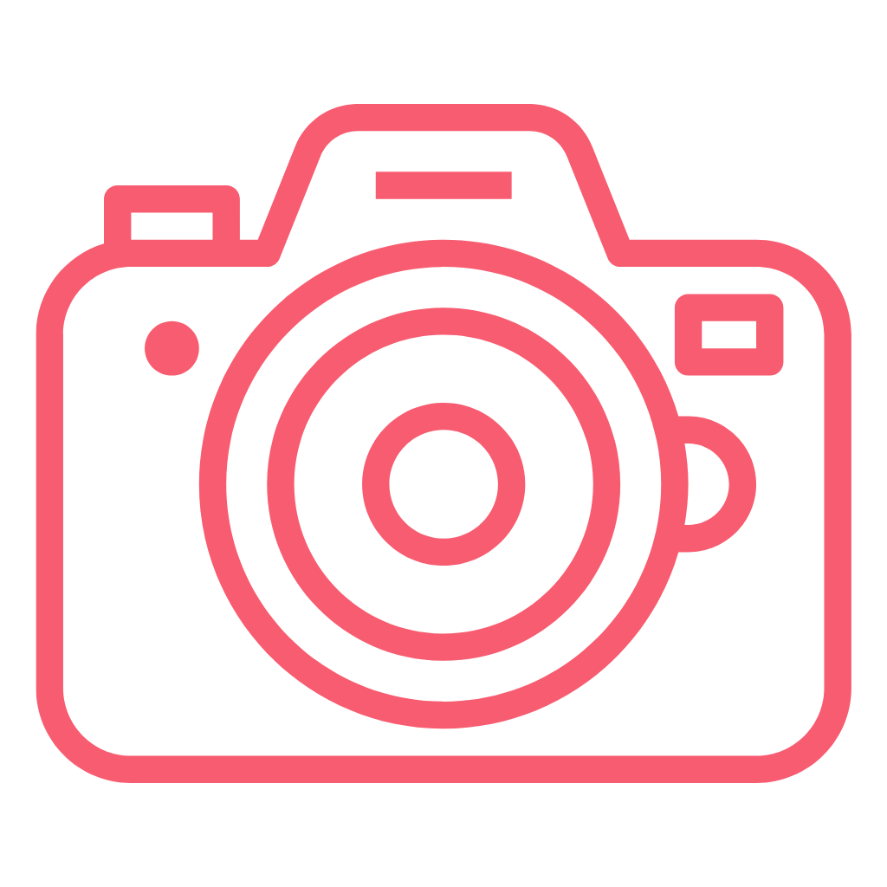

Om mig
Mit navn er Anna Østergaard Jensen, jeg er 29 år gammel, og bosat på fyn. jeg læser multimediedesign på UCL erhvervsakademi og professionshøjskole. Min kreativitet er min drivkraft og siden jeg var barn har kreativitet været en vigtigt måde at udtrykke mig på og derfor er det ikke helt mærkeligt at jeg ende med at uddanne mig inden for denne verden en af mine helt store passioner er grafik design både fysisk og digital. og i den forbindelse, har jeg lavet en lille virksomhed, som hedder Luxvinylcrafs.
Hvor jeg laver specialdesignet, print,skilte og meget andet til fest og bryllup. Samt unikke og personlige gaver. Med min baggrund i salgs verden er kundens behov en vigtig ting for mig derfor vil jeg altid stræbe for at løse opgaven så alle behov er dækket og ønsker opfyldt. jeg ser mig selv som en produktiv, detaljeorienteret og perfektionistik person og selvom det sidste kan være min største fjende er det også en kæmpe styrke, derudover er jeg en udadvendt person som ikke er bange fo at sige min mening.
I min fritid samler jeg inspiration, og lader mine batterier op sammen med min kæreste, på vores fælles kærlighed for elektronisk musik og nyder vores festivaler og events gennem året.
Hvor jeg laver specialdesignet, print,skilte og meget andet til fest og bryllup. Samt unikke og personlige gaver. Med min baggrund i salgs verden er kundens behov en vigtig ting for mig derfor vil jeg altid stræbe for at løse opgaven så alle behov er dækket og ønsker opfyldt. jeg ser mig selv som en produktiv, detaljeorienteret og perfektionistik person og selvom det sidste kan være min største fjende er det også en kæmpe styrke, derudover er jeg en udadvendt person som ikke er bange fo at sige min mening.
I min fritid samler jeg inspiration, og lader mine batterier op sammen med min kæreste, på vores fælles kærlighed for elektronisk musik og nyder vores festivaler og events gennem året.
Kompetencer




Har kompetencer inden for illutrationer,
både til fysisk print samt digitalt design.
Har erfaring med, udarbejdelse af skærerfiler til skæreplottere.
både til fysisk print samt digitalt design.
Har erfaring med, udarbejdelse af skærerfiler til skæreplottere.
Har erfaring med at designe i photoshop.
Samt redigering af billeder.
Dette bruger det til at redigere mine produktbileder.
Samt redigering af billeder.
Dette bruger det til at redigere mine produktbileder.
Min erfraring med InDesign er hovedsageligt
inden for udformimg af print medier og mockups
inden for udformimg af print medier og mockups
Min erfaring inden for fotografi er indenfor produktfotografi.
Hvor jeg har taget billeder, af mine produkter til min virksomheden.
Jeg kan udnytte egenskaberne, fra et mobilkamera og et slr kamera
Hvor jeg har taget billeder, af mine produkter til min virksomheden.
Jeg kan udnytte egenskaberne, fra et mobilkamera og et slr kamera
Portfolio